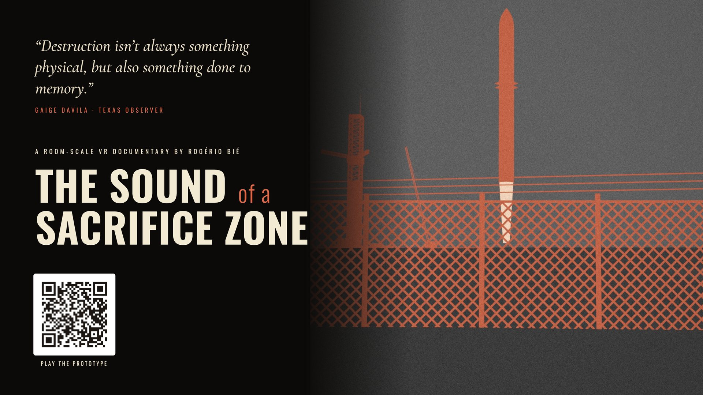
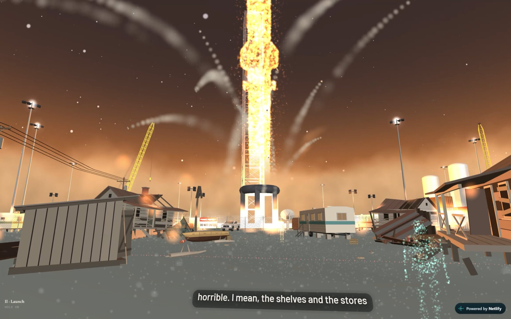
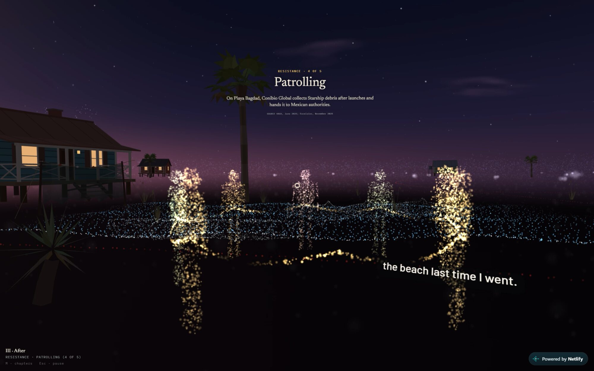

XR & Immersive · Documentary
2026–2028 · XR & Immersive · Documentary
The Sound of a Sacrifice Zone
Director · Producer · Writer
Boca Chica, Texas / Playa Bagdad, Tamaulipas
A room-scale VR documentary on a border community resisting erasure where SpaceX's Starship program meets the coast.
US$224K production budget, premiere 2028


